场景编辑
组件组成
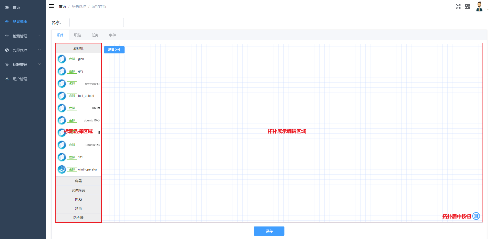
左边为标靶选择面板，右边为拓扑展示编辑面板，其中拓扑居中按钮和场景文件按钮，场景文件是拓扑额外所需的zip包。
操作介绍
添加节点
- 从标靶面板拖拽标靶图标至拓扑区域，拓扑区域自动生成与标靶对应的节点，拓扑的右边自动弹出该节点的数据编辑面板。 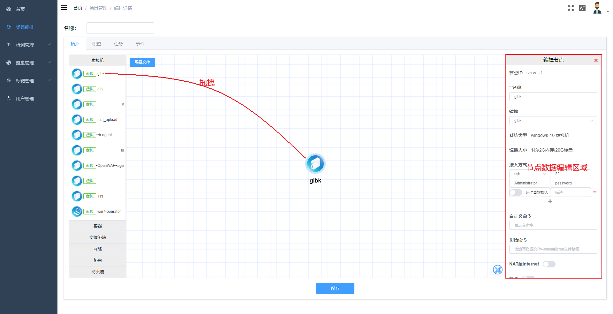
编辑节点
- 点击节点或在节点上右键选择’编辑节点’，节点数据编辑面板会显示出来 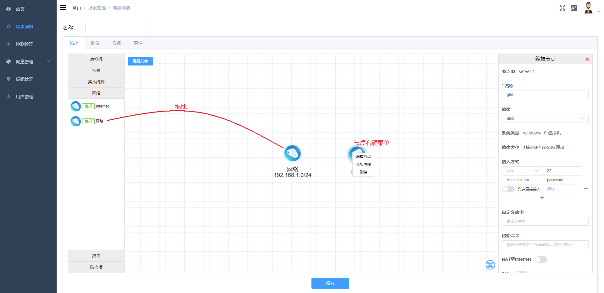
删除节点
- 在节点上右键选择’删除’，删除节点
添加连线
-
在节点上右键选择’添加连线’，节点会进入添加连线的状态（持续5s）， 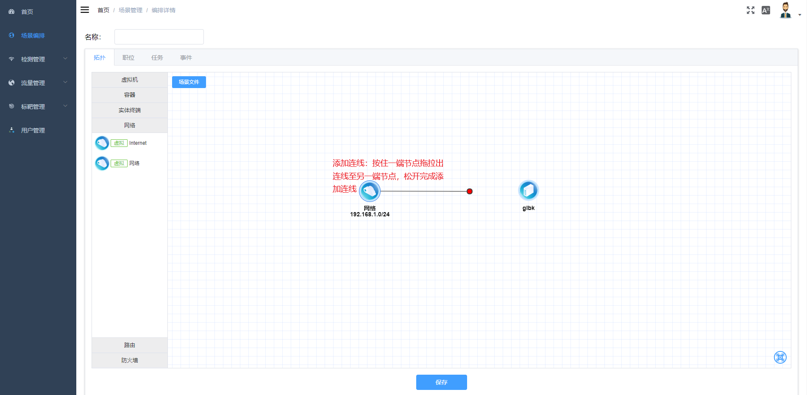 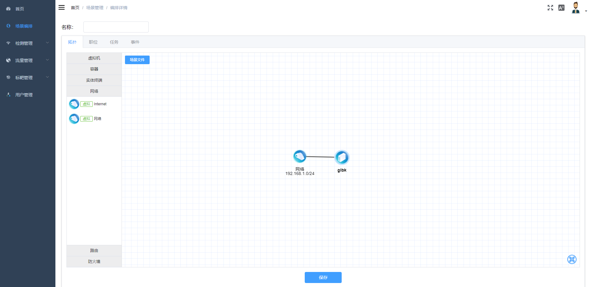
-
注意
- 节点无法自己和自己连接
- 网络节点无法和网络节点连接
- 网关(路由，防火墙等)节点/终端节点只能和网络连接
- 节点间只能有一条连线
- 实体端口设备的连接数无法超过端口数量
删除连线
- 在连线上右键选择’删除’，删除连线
节点数据
网络
-
外部网络
- id以internet开始的网络节点为外部网络（一般从Internet标靶拖拽生成），可修改名称 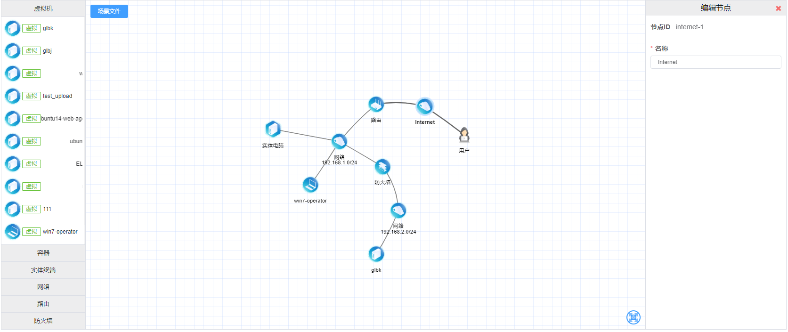
-
普通网络
- id非internet开始的网络节点为普通默认网络，可编辑名称，地址段，网关，DNS，是否开启DHCP 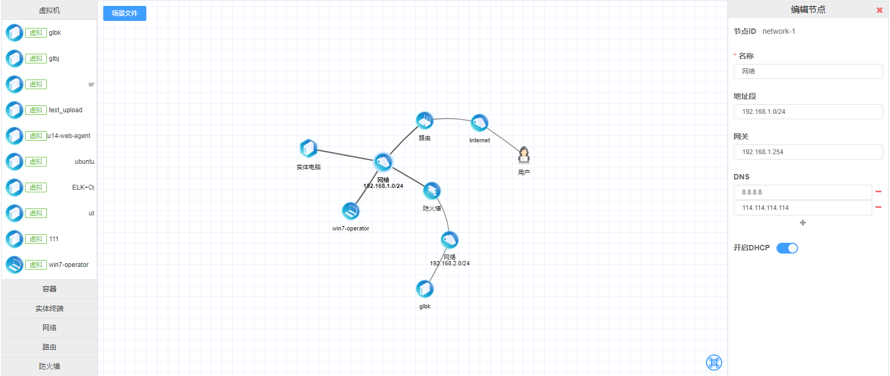
网关
- 路由
- 路由可编辑名称，静态路由表 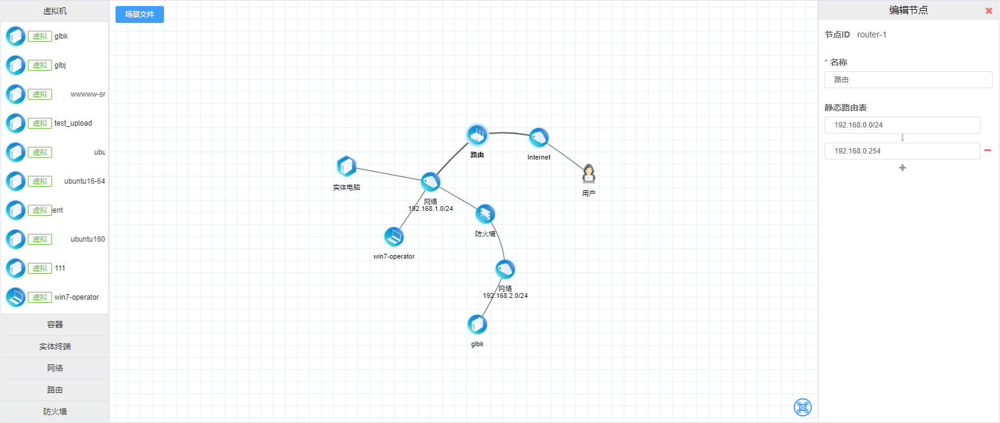
- 防火墙
- 路由可编辑名称，静态路由表，防火墙规则 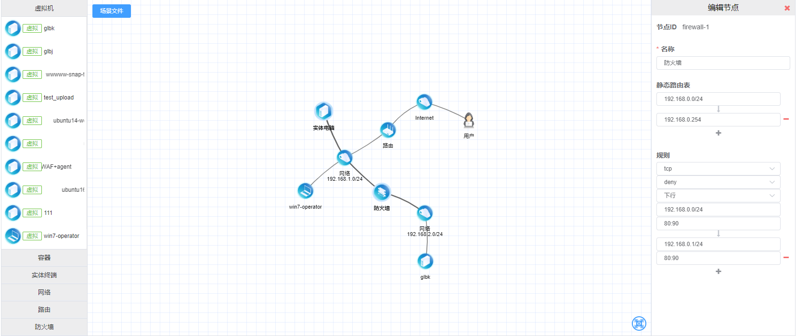
终端
-
虚拟终端
- 虚拟终端可编辑名称，镜像，接入方式，自定义命令，初始命令，网络配置，是否NAT至Internet

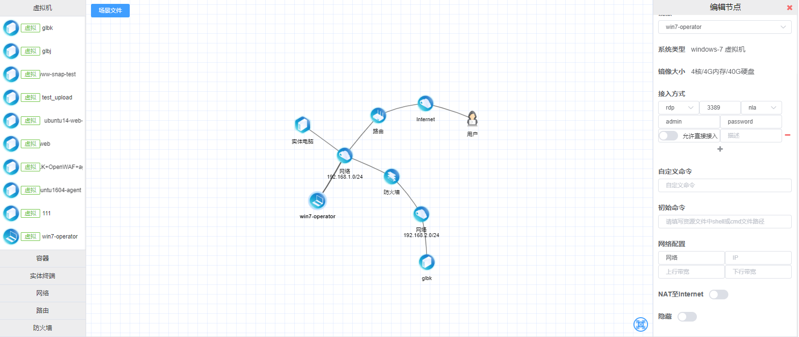
注意
- 接入方式rdp会有第三个额外选项-认证方式，如果不明确镜像设置，一般情况下win7及以上选择nla, win7以下以及linux选择rdp。
- 接入方式-允许直接接入选项只有在终端未连接外部网络并未NAT至Internet下才生效
- 自定义命令与场景文件无关，初始命令与场景文件有关
- 直连外网的终端不支持配置指定IP
- NAT至Internet选项只有在终端连接内网并且该内网到外网存在直接路由时才生效
- 虚拟终端可编辑名称，镜像，接入方式，自定义命令，初始命令，网络配置，是否NAT至Internet
-
实体终端
- 实体终端可编辑名称，网络配置 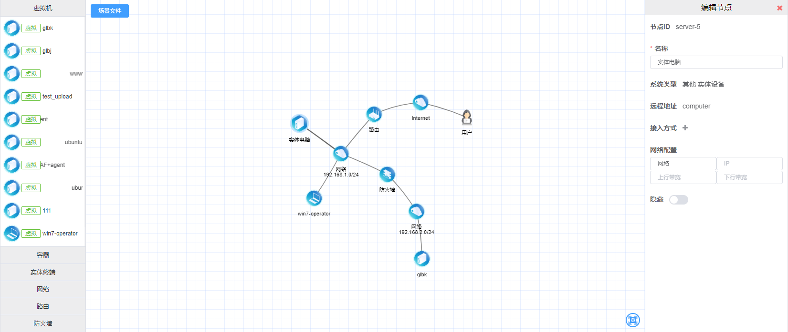